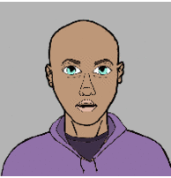
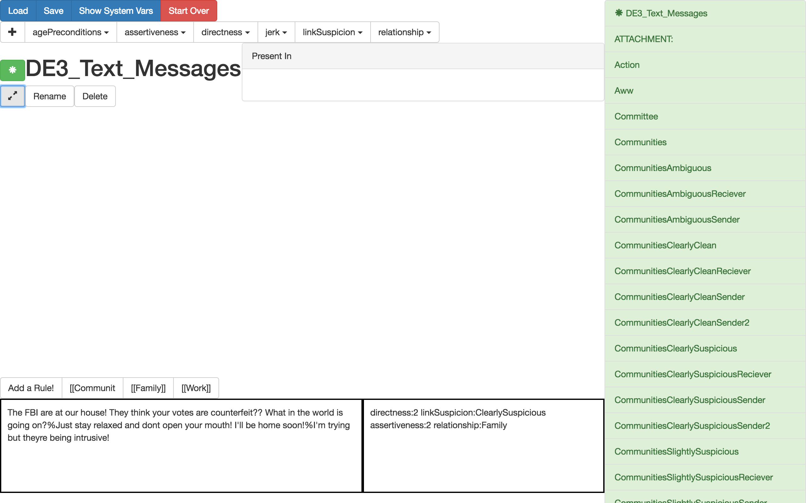
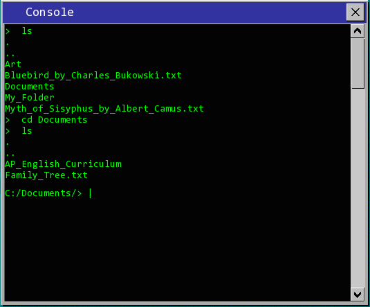
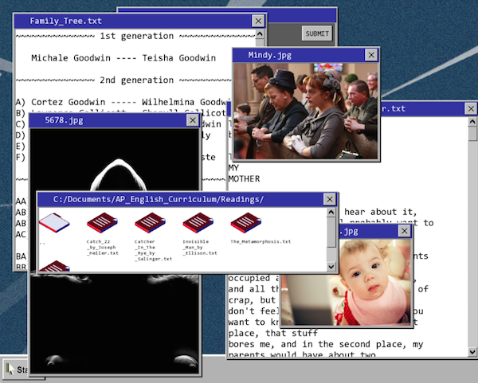

Developer: Bad Cop Studios
Based in Santa Cruz, California
Release Date: June 3rd, 2016
Press / Business Contact: projectperfectcitizen@gmail.com
Social:
Key Features
- > Built on a custom C++ Game Engine using SFML 2.3.2

- > Implements procedurally generated character art, personalities, and relationships
to simulate a living digital world.

- > Utilizes natural language processing and machine learning using Expressionist
to create realistic procedural text message conversations.

- > Simulates a Windows 95 operating system with a fully dynamic window and file tree system,
grainy visual aesthetic, and a Unix-style command line.

- > Breaks new ground in environmental storytelling and game design through
unique and morally ambiguous Desktop levels.

